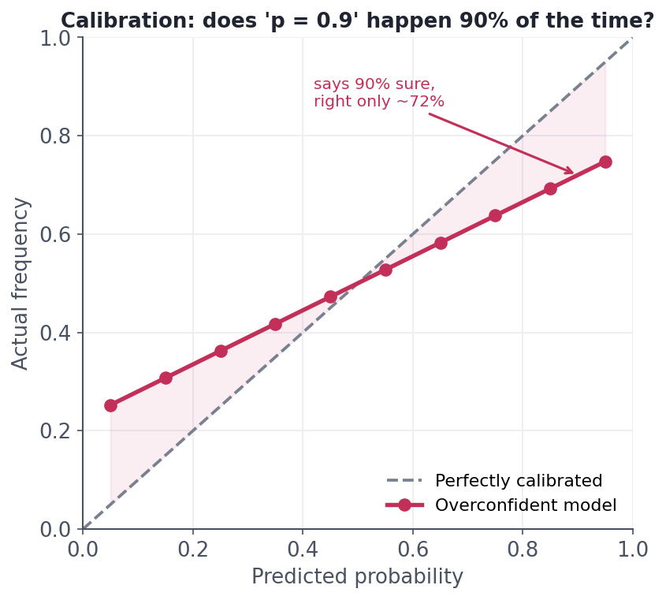

Calibration & Thresholds
When a 0.7 should mean 70%.
Two things every practitioner assumes about a classifier's output — and both are often wrong. First, that predict_proba gives a real probability (it usually doesn't; "0.9" may not mean 90%). Second, that the 0.5 threshold is sacred (it's an arbitrary default that rarely matches your costs). Fixing these — calibration and threshold selection — is often the cheapest, highest-leverage improvement you can make to a deployed model, and it requires no retraining at all.
Trustworthy probabilitiesCalibration: does 'p = 0.9' happen 90% of the time?
A model is calibrated if, among all the cases it says are 80% likely, about 80% actually are. Many strong models (boosted trees, SVMs, naive Bayes) are not calibrated — they rank cases well but their probabilities are distorted, often overconfident (pushed toward 0 and 1). A reliability diagram shows it: bin predictions by probability and plot predicted vs. observed frequency against the diagonal:

Why it matters: whenever the probability itself drives a decision — expected-value calculations, risk pricing, ranking by likelihood, thresholds tied to cost — miscalibration quietly corrupts everything downstream. Fixes (fit on a held-out set, never the training data): Platt scaling (fit a logistic curve to the scores) or isotonic regression (a flexible monotonic map). Neither changes the ranking or requires retraining the base model — they just repair the probability scale. Measure it with a reliability diagram or the Brier score.
Move it to fit your costsThresholds: 0.5 is just a default
Turning a probability into a decision needs a threshold, and 0.5 is an arbitrary starting point — not a law. Because precision and recall trade off as you slide it (lesson 10.1), the right threshold depends entirely on the cost of each error:
- Lower the threshold (flag at, say, 0.2) → catch more positives (higher recall), more false alarms — good for cancer screening, fraud triage.
- Raise it (flag only above 0.8) → fewer, surer positives (higher precision) — good for auto-blocking accounts or any costly action.
You choose the threshold after training, on validation data, by optimising the metric or expected cost that reflects your problem — not by leaving it at 0.5 out of habit.
Setting a threshold well is often a bigger win than squeezing another point of AUC out of the model — and it's free. If false negatives cost 10× what false positives do, encode that: pick the threshold that minimises 10·FN + 1·FP on validation. You've now aligned the model with the business, not with an arbitrary 0.5.
Interactive labYour turn — move the threshold, change the decision
You have predicted probabilities probs. A lower threshold flags more positives. Count how many cases are flagged positive at a threshold of 0.3 (i.e. probs >= 0.3) and assign that count to answer (an int). Compare it mentally to how many 0.5 would flag.
(probs >= 0.3).sum() counts the True values; wrap in int(...).answer = int((probs >= 0.3).sum())At 0.3, 7 cases are flagged; at 0.5 only 4 would be. Lowering the threshold trades precision for recall — you catch more positives but accept more false alarms. The 'right' threshold is wherever your cost of a miss vs. a false alarm balances, not a default 0.5.
★ Key points to remember
- Calibrated = 'p = 0.8' is right ~80% of the time. Many strong models (boosted trees, SVMs) are overconfident and need fixing.
- Check calibration with a reliability diagram / Brier score; fix with Platt scaling or isotonic regression on held-out data (ranking unchanged).
- Calibration matters whenever the probability itself drives a decision (expected value, pricing, cost-based thresholds).
- The 0.5 threshold is an arbitrary default — choose it from your error costs on validation data.
- Lower threshold → more recall; raise → more precision. Tuning it is often a bigger, cheaper win than more model tuning.
◆ Practice▸
predict_proba output directly to price insurance risk. Why might you be worried, and what would you check?Show solution & reasoning
Because pricing acts on the probability value itself, not just the ranking — so if the model is miscalibrated (e.g. an overconfident boosted tree that says 0.9 when the true rate is 0.72), every price is systematically wrong, over- or under-charging whole segments. I'd check calibration: plot a reliability diagram on held-out data and compute the Brier score; if the curve departs from the diagonal, recalibrate with Platt scaling or isotonic regression (fit on a separate calibration set), then re-plot to confirm. Only once p genuinely means p should it drive prices. (Good ranking / AUC is necessary but not sufficient here.)
Show solution & reasoning
Fraud triage for human review: missing a fraudulent transaction (false negative) is far costlier than sending a legitimate one for a quick review (false positive). So lower the threshold well below 0.5 — flag anything with, say, ≥0.15 probability — to maximise recall and catch more fraud, accepting more false alarms that a human queue filters out. Conversely, for auto-suspending accounts with no human in the loop, raise the threshold (only act above ~0.9) to protect precision and avoid wrongly penalising real customers. Same model, opposite thresholds — because the cost of each error differs, and that, not 0.5, is what sets the operating point.
◎ Deep dive: Platt vs. isotonic calibration, and proper scoring rules (Brier, log loss)▸
Platt vs. isotonic — which calibrator? Platt scaling fits a one-parameter logistic curve mapping scores to probabilities: simple, data-efficient, ideal when you have little calibration data or the distortion is roughly sigmoidal. Isotonic regression fits any monotonic step function: more flexible, can correct odd-shaped miscalibration, but needs more data and can overfit on small sets. Both are fit on a held-out calibration set (or via cross-validation), never the training data, and both preserve the model's ranking — so AUC is unchanged while the Brier score and reliability improve.
Metrics that judge probabilities, not just decisions. Accuracy/precision/recall grade thresholded outputs; to grade the probabilities themselves use proper scoring rules: the Brier score (mean squared error between predicted probability and outcome) and log loss (which punishes confident wrong predictions harshly). A model can have great AUC yet a poor Brier score if it's miscalibrated. The professional habit is to report a ranking metric (AUC/PR-AUC), a calibration check (reliability diagram / Brier), and the operating-point metrics at your chosen threshold — three lenses, because each hides what the others reveal. Optimising one alone is how models look good in a notebook and disappoint in production.